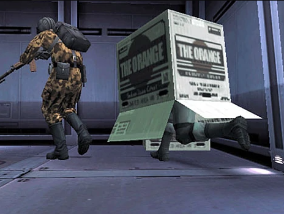

Welcome to the animal wiki!
Which animal would you like to see? Please choose from the following list:
Turtle, Monkey, Snake
Turtles

Tetranadon is an Amphibian with an inflatable belly and a turtle-like shell on their back. Its belly is capable of inflating to the point of doubling their original body size. It also has algae-like fur on its head, front legs, shell, and tail. It has a toothless, platypus-like beak and webbed feet. Its eyes are orange and have the horizontal pupil common to amphibians. It also has a crest on their head that looks very similar to the head dish of the mythological Kappa. When its belly is not inflated, it walks on all fours; once enough debris is swallowed, however, its belly inflates to an incredible size, and it starts standing on its hindlegs.
Monkey

Monkey is a common name that may refer to most mammals of the infraorder Simiiformes, also known as the simians. Traditionally, all animals in the group now known as simians are counted as monkeys except the apes, which constitutes an incomplete paraphyletic grouping; however, in the broader sense based on cladistics, apes (Hominoidea) are also included, making the terms monkeys and simians synonyms in regards to their scope.
Snake
Snake is a video game genre where the player maneuvers a growing line that becomes a primary obstacle to itself. The concept originated in the 1976 two-player arcade game Blockade from Gremlin Industries, and the ease of implementation has led to hundreds of versions (some of which have the word snake or worm in the title) for many platforms. 1982's Tron arcade game, based on the film, includes snake gameplay for the single-player Light Cycles segment. After a variant was preloaded on Nokia mobile phones in 1998, there was a resurgence of interest in snake games as it found a larger audience.
Another Definition: Snake was one of the children born of the 1972 project Les Enfants Terribles. He was created as a clone of the world-renowned soldier Big Boss, along with his brothers Liquid Snake and Solidus Snake. Initially a Green Beret, Snake was later inducted into the High-Tech Special Forces Unit FOXHOUND in the 1990s while it was commanded by Big Boss. Repeatedly tasked with disarming and destroying the latest incarnation of Metal Gear, a bipedal nuclear weapon-armed tank, Snake would thrice avert potential nuclear catastrophe, becoming a famed war hero.
You've made the wrong choice, try again.